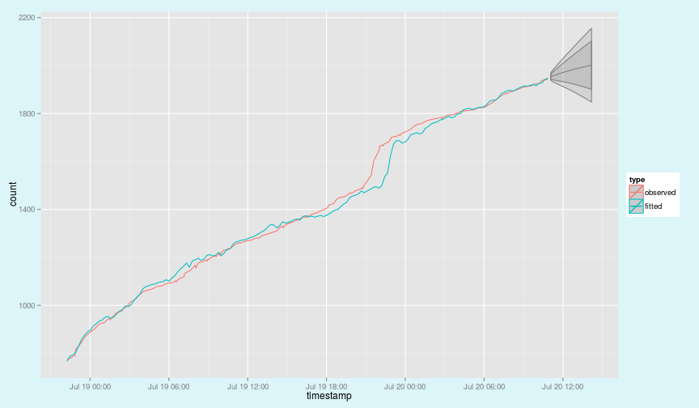

Exploring Tactical Content Trends and Forecasts
Developing Data Products Assignment*
Coursera Course by John Hopkings University
presentation by sami kallinen
* The Assignment: "OK, you've made your shiny app, now it's time to make your pitch. You get 5 slides (inclusive of the title slide) to pitch a your app. You're going to create a web page using Slidify or Rstudio Presenter with an html5 slide deck."
1. Why?
In a world of increasing complexity and fragmentation, with a plethora of content being published every second, we need new tools help us to sift through this abundance and make sense of the world. For any such tools, data is going to be central. This app was created as a proof of conceptfor one such tools.
2. What?
The Content Trend Explorer and Forecaster let's you explore data about how different content items are shared on social media. You can apply different filters to explore different aspects of the trending item. Filters include the following:
- Defining minimum and maximum values for item share count.
- Defining share velocity, ie. how many times the url has been shared per hour.
- Defining time period by setting how many hours will be displayed.
- Selecting sources. Narrowing down the sources to certain predefined types of tweeters.
- You can also pick one item and isolate its trend plus forecast how it will be shared in the future.
3. How?
Your task in the app is to isolate interesting items. The upper plot contains items shared less than 5000 times with a velocity of at least 10 shares/h. Not much help, is it? By toying with the "levers" you'll find the interesting items. The plot below has max set to 1000 shares and velocity to 28.
s <- data.frame(sCmax=c(5000,1000), sCmin=50, velocity=c(10,28))
p1 <- trendplot(pr, s[1,]); p2 <- trendplot(pr, s[2,]); multiplot(p1, p2)

4. Forecasting
The app also lets you pick indvidual items, explore them separately and forecast how they will be shared in the future. The method used is exponential smoothing. Not only the forecast but, also the 95% respective 80% confidence intervals are plotted.
